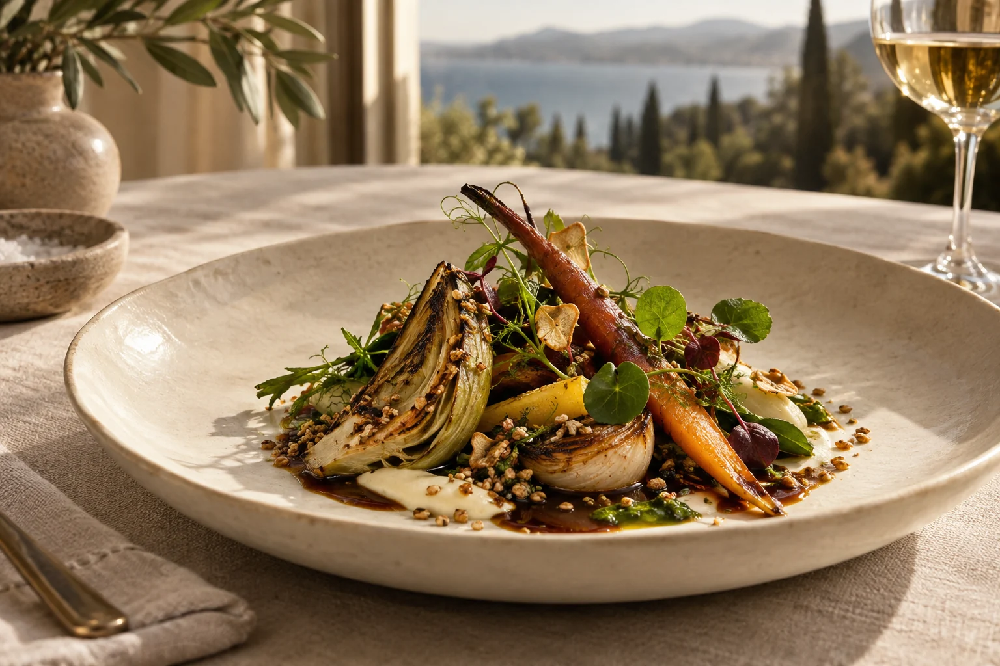
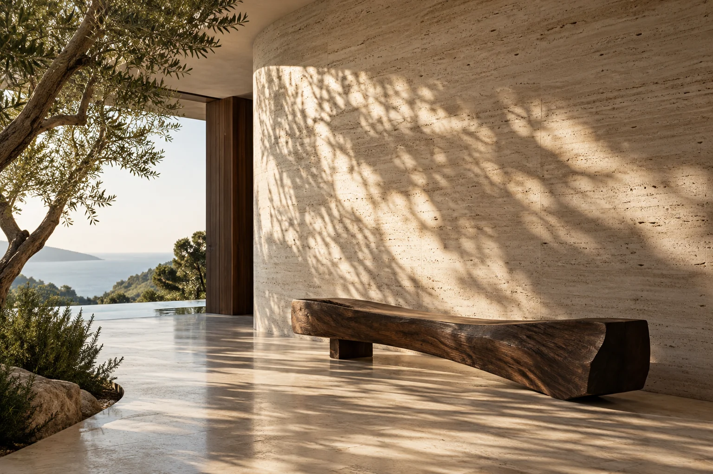

Le jardin · 28 €
Légumes de saison, crème d’herbes et huile parfumée.

Une cuisine qui écoute le paysage et prend le temps de vous raconter une saison.
Explorer la maisonDans cette maison imaginée, les déjeuners sont lumineux et les dîners s’étirent à la lueur des bougies.

de conviction." loading="lazy" width="1600" height="1067">Notre chef de fiction privilégie les cuissons justes, les contrastes délicats et la générosité du produit. Aucune récompense gastronomique n’est revendiquée.

Le chef imaginé pour ce concept travaille une carte courte. Son ambition : faire émerger le goût sans le masquer. Le personnage ne représente aucun professionnel réel.
Légumes de saison, crème d’herbes et huile parfumée.
Pièce rôtie, jus court et légumes racines. Alternative végétale sur demande.
Fruit de saison, crème légère et biscuit aux amandes. Prix fictifs ; allergènes à confirmer auprès d’un établissement réel.

Le potager et les récoltes inspirent cette proposition culinaire. Aucun partenariat réel avec des producteurs n’est revendiqué.
Sélection imaginaire de vins de terroir. Service réservé aux adultes.
Infusions à froid, jus de saison et créations botaniques.
Accords à la carte et conseil personnalisé dans un futur service réel.
Un dîner intime dans le jardin ou une dégustation en petit comité. Menu découverte de démonstration : 110 € par personne, boissons non comprises.

bleue." loading="lazy" width="1600" height="1067">Un fauteuil, une conversation et un verre face au jardin. Le bar accompagne les soirées sans jamais les presser.
Une composition aussi généreuse que précise.
La chaleur du bois, la douceur du soir.
Composez votre demande pour découvrir l’interface. Rien n’est envoyé à un établissement. N’utilisez pas de données personnelles réelles.
12 h 30 à 14 h 30 — horaires fictifs.
19 h à 22 h — horaires fictifs.
Tenue décontractée élégante. Besoins alimentaires à préciser dans une demande réelle.